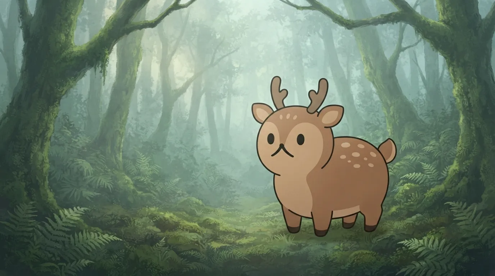
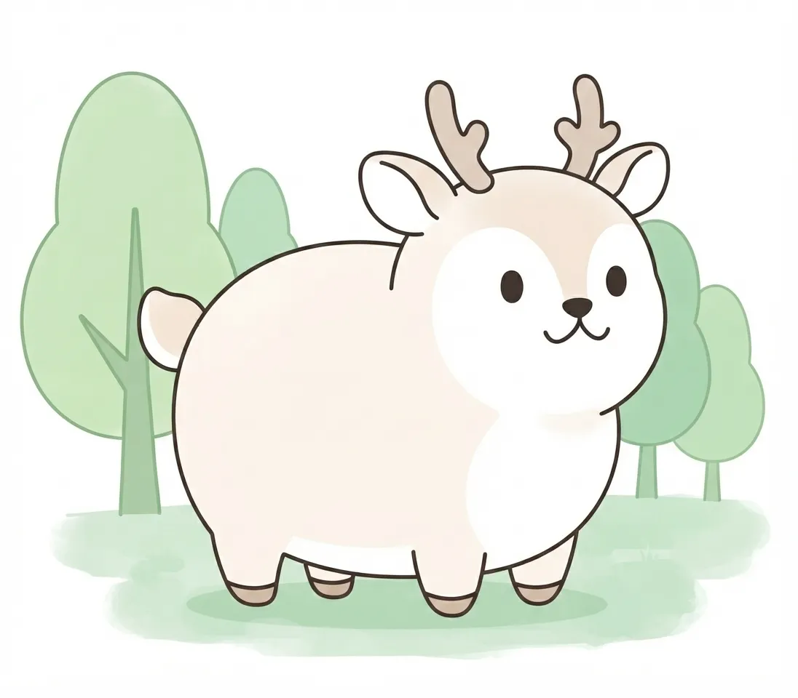
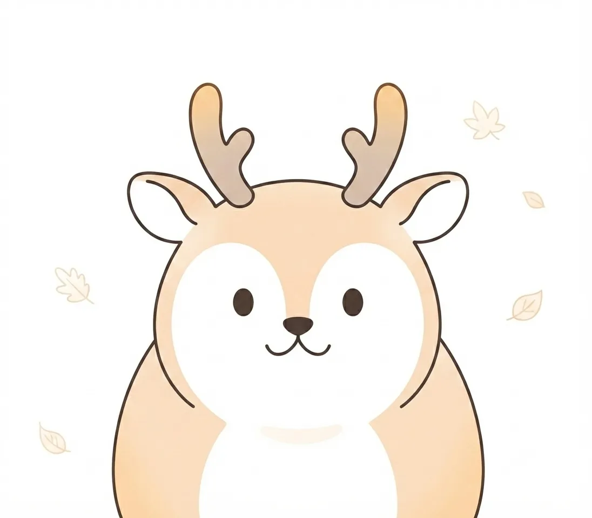
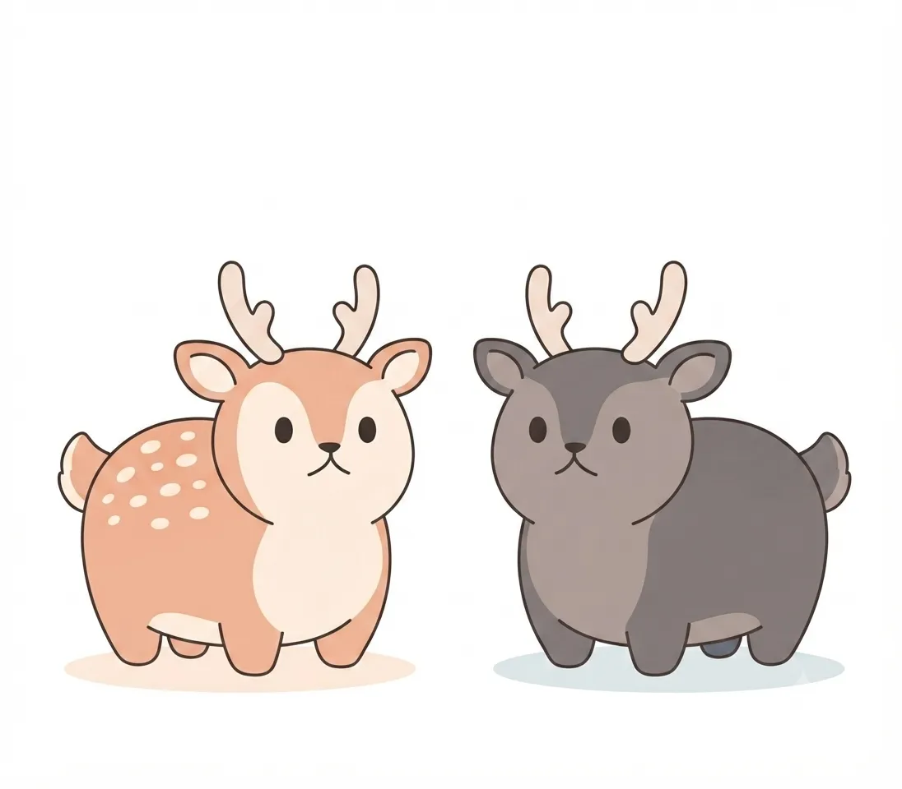
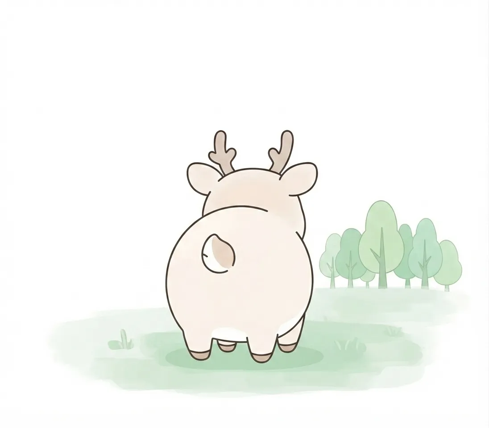

Yezo Sika Deer
A species native to Hokkaido's forests. It changes its form with the seasons.
| Scientific name | Cervus nippon yesoensis |
|---|---|
| English name | Yezo sika deer |
| Class | Artiodactyla, Cervidae |
| Range | Forests and grasslands throughout Hokkaido |
| Length | 140–190 cm |
| Weight | 70–140 kg |
| Notes | A subspecies of the sika deer, larger than those on Honshu. The male's antlers regrow each year. Its coat changes from spotted reddish-brown in summer to greyish-brown in winter. |
Living in Hokkaido's Forests
Rooted deep in Hokkaido's vast forests and grasslands, the yezo sika deer has lived within that rich ecosystem. Moving quietly among the trees, feeding on grass, buds, and bark, its figure holds a serene air, at one with the ever-changing nature of the northern land.
Even within our park, it sometimes shows a delicate gesture — suddenly pricking up its ears, sensing what lies around it. Its bearing, set against a rich natural backdrop, is full of an important presence that carries the workings of the northern forest into the present.

What the Antlers Tell
The splendid antlers rising with dignity above the male's head are a symbol that tells of the yezo sika deer's strength and the history of its life. Growing rapidly from spring into summer, the antlers harden with the arrival of autumn, shaping the strength needed for the harsh winter season.
This beautiful structure, renewed again and again with the turning of the seasons, is also proof that they take in the severity and suppleness of the natural world with their whole being. In the figure above their head, gazing quietly into the distance, the pride of the wild and the weight of life are quietly conveyed.

The Seasons and Changing Coats
To adapt to the harsh northern climate, the yezo sika deer's attire undergoes a vivid change with each season. In summer, when the green of the trees shines, it turns to a light coat of reddish-brown scattered with white spots, reflecting the arrival of the warm season.
In contrast, when full winter arrives, the coat changes to a deep grey-brown, and by storing air in each strand of hair, it transforms into cold-weather gear that keeps out the chilling wind. Changing its hues with the passing seasons, its figure is the very wisdom of life, in splendid harmony with the nature of the north.

Between People and the Forest
Within Hokkaido's natural environment, the presence of the yezo sika deer symbolizes the expanse of the rich forest, while also holding many facets in its relationship with human society. The meaning of wild animals and people living in the same region, and the question of how to keep nature's balance, are themes that we who live in the northern land cannot avoid.
To encounter the calm life of the yezo sika deer at a zoo is not only to know the beauty of the individual animal. It offers a precious chance to reflect quietly on Hokkaido's vast nature, and on the way of being of every life connected to it.
